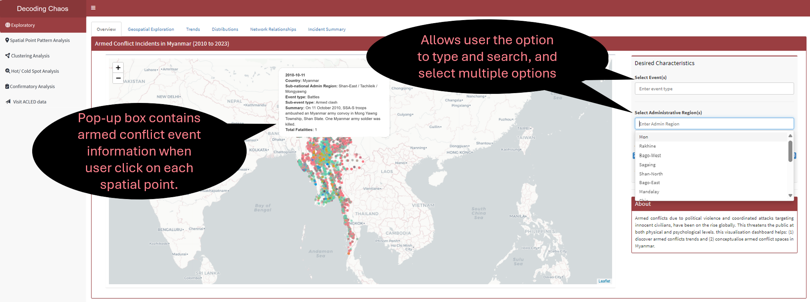
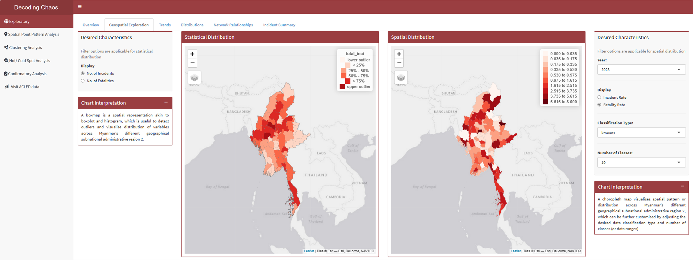
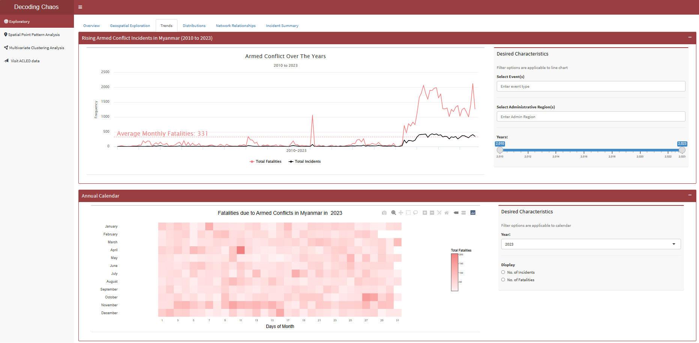
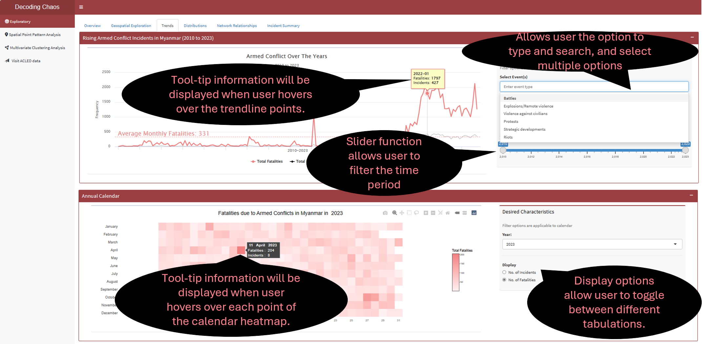
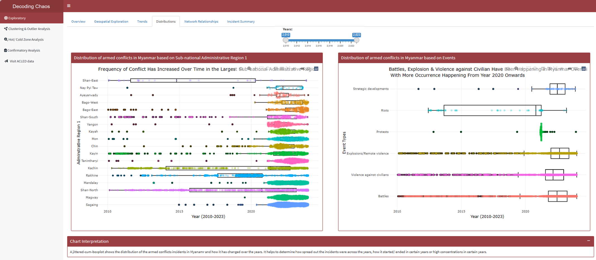
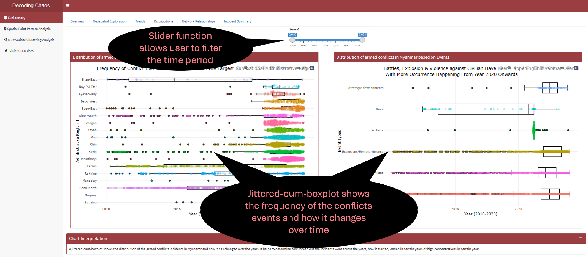
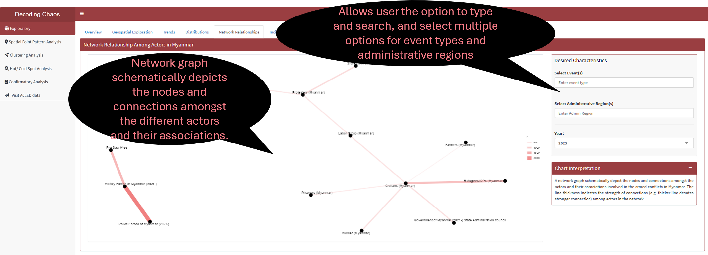
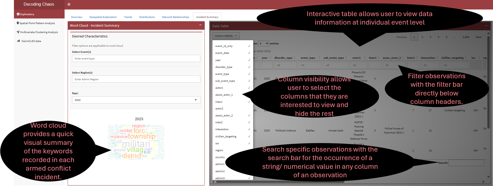

Storyboard aims to visually maps out user’s experience. It is a tool for making strong visual connection between the insights uncovered based on research and user’s interaction with the R Shiny dashboard application. The interactive components and UI design aims to facilitate data (and geospatial) exploration and analysis for users in the Defence and Security sectors to develop effective counter measures and strategies.
The “Exploratory” dashboard can be broadly classify into two key areas:
Geospatial Data Exploratory Analysis allows users to select different variables and perform spatial exploration on the dataset to conceptualise armed conflict spaces in Myanmar.
Data Exploratory Analysis allows users to select different variables and perform initial exploration on the dataset to discover distribution, trends and network relationships of armed conflicts in Myanmar.
The proposed layouts and UI features for “Exploratory” have been conceptualised into six sections (or tabPanel() in R Shiny Application terms).
Code chunk below shows the six tabPanel() in which ExploreSubTabs will form one of the three tabsetPanel() in the entire project dashboard as part of UI.
This tab serves as the “landing page” that displays the map of Myanmar and its spatial points of armed conflicts over the years (i.e. 2010 to 2023). Figure below shows the UI interactive features in the Overview sub-tab.

Code chunk below shows the simplified version of UI and Server components in R Shiny application for Overview sub-tab.
Show code
# UI ComponentsExploreOverviewrow1 <-fluidRow(leafletOutput(), # display point spatial mapselectizeInput(), # select event (allows multiple selection)selectizeInput(), # select administrative region (allows multiple selection)sliderInput() # select year range)# Server Componentsoutput1 <-renderLeaflet({}) # point spatial map
Section Two - Geospatial Exploration

Prototype: Exploratory - Geospatial Exploration
This tab displays two geospatial exploration maps (i.e. statistical distribution and spatial distribution). Each map allows users to select different display variables and perform spatial exploration to conceptualise armed conflict spaces in Myanmar. Figure below shows the UI interactive features in the Geospatial Exploration sub-tab.
Code chunk below shows the simplified version of UI and Server components in R Shiny application for Geospatial Exploration sub-tab.
Show code
# UI ComponentsExploreGeospatialrow1 <-fluidRow(radioButtons(), # display radio button optionstmapOutput(), # display statistical distribution maptmapOutput(), # display spatial distribution mapselectInput(), # dropdown box selection for yearradioButtons(), # display radio button optionsselectInput(), # dropbox selection for classification typesselectInput() # dropbox selection for number of classes)# Server Componentsoutput2.1<-renderTmap({}) # statistical distribution mapoutput2.2<-renderTmap({}) # spatial distribution map
Section Three - Trends

Prototype: Exploratory - Trends
This tab allows user to perform time series analysis to identify trends, or cyclic patterns, spot anomalies, visualise distribution of armed conflict incidents/ fatalities and how it has changed over the years using either line chart or calendar heatmap. Figure below shows the UI interactive features in the Trends sub-tab.

Code chunk below shows the simplified version of UI and Server components in R Shiny application for Trends sub-tab.
Show code
# UI ComponentsExploreTrendrow1 <-fluidRow(highchartOutput(), # display line chartselectizeInput(), # select event (allows multiple selection)selectizeInput(), # select administrative region (allows multiple selection)sliderInput() # select year range)ExploreTrendrow2 <-fluidRow(plotlyOutput(), # display calendar heatmapselectInput(), # dropdown box selection for yearradioButtons() # display radio button options)# Server Componentsoutput3.1<-renderPlotly({}) # line chartoutput3.2<-renderPlotly({}) # calendar heatmap
Section Four - Distributions

Prototype: Exploratory - Distributions
This tab provides user with data exploration tools to explore the distribution of armed conflict incidents that resulted in fatalities and the dispersion of such incidents across the years in Myanmar. Figure below shows the UI interactive features in the Distribution sub-tab.

Code chunk below shows the simplified version of UI and Server components in R Shiny application for Distributions sub-tab.
Show code
# UI ComponentsExploreDistributionrow1 <-fluidRow(sliderInput() # select year range )ExploreDistributionrow2 <-fluidRow(plotlyOutput(), # display plot 1plotlyOutput() # display plot 2 )# Server Componentsoutput4.1<-renderPlotly({}) # distribution plot 1output4.2<-renderPlotly({}) # distribution plot 2
Section Five - Network Relationships
Prototype: Exploratory - Network Relationships
This tab provides users with data exploration tools to explore on the network association amongst the top actors (with more than 300 interactions with the other actors in each year) involved in the armed conflict incidents in Myanmar. Figure below shows the UI interactive features in the Network Relationships sub-tab.

Code chunk below shows the simplified version of UI and Server components in R Shiny application for Network Relationships sub-tab.
This tab visualises large volume of armed conflict incident summary notes that captures keywords recorded in a word cloud. This is useful to spot changes over time where users do not have to read through all incident summary notes. In addition, an interactive datatable is provided for users who prefer to explore the dataset.
Figure below shows the UI interactive features in the Incident Summary sub-tab.

Code chunk below shows the simplified version of UI and Server components in R Shiny application for Incident Summary sub-tab.
Show code
# UI ComponentsExploreSummaryrow1 <-fluidRow(selectizeInput(), # select event (allows multiple selection)selectizeInput(), # select administrative region (allows multiple selection)selectInput(), # select yearplotOutput(), # display word cloud DT::dataTableOutput() # display datatable )# Server Componentsoutput6.1<-renderPlot({}) # word cloudoutput6.2<- DT::renderDataTable({}) # data table
3. R Shiny Application (simplified code)
The storyboard (in Section 2) facilitates the development of a prototype in R Shiny Application. Iterative prototyping will allow continuous improvement of the final dashboard for the project when combined with the other team members’ work.
Code chunk below shows the simplified version of R Shiny Application for Exploratory prototype.
#========================================================== ## load R packages#========================================================== pacman::p_load(shiny, shinydashboard, tidyverse, dplyr, leaflet, leaflet.extras, plotly, highcharter, fresh, shinycssloaders, ggthemes, sf, spdep, tmap, mapview, leafsync, tm, ggforce, ggraph, igraph, wordcloud, tidytext, DT)#========================================================== ## UI Components#========================================================== # main header ---header <-dashboardHeader(title ="Decoding Chaos")# main sidebar ---sidebar <-dashboardSidebar()sidebarMenu(menuItem("Exploratory", tabName ="Exploratory"),menuItem("Spatial Point Pattern Analysis", tabName ="PointAnalysis"),menuItem("Multivariate Clustering Analysis", tabName ="Clustering"),menuItem("Visit ACLED data"))# main body ---body <-dashboardBody(tabItems(tabItem(tabName ="Exploratory", ExploreSubTabs ),tabItem(tabName ="Spatial Point Pattern Analysis" ),tabItem(tabName ="Multivariate Clustering Analysis" ) ) )# fluidRows ---ExploreOverviewrow1 <-fluidRow(leafletOutput(), # display point spatial mapselectizeInput(), # select event (allows multiple selection)selectizeInput(), # select administrative region (allows multiple selection)sliderInput() # select year range)ExploreGeospatialrow1 <-fluidRow(radioButtons(), # display radio button optionstmapOutput(), # display statistical distribution maptmapOutput(), # display spatial distribution mapselectInput(), # dropdown box selection for yearradioButtons(), # display radio button optionsselectInput(), # dropbox selection for classification typesselectInput() # dropbox selection for number of classes)ExploreTrendrow1 <-fluidRow(highchartOutput(), # display line chartselectizeInput(), # select event (allows multiple selection)selectizeInput(), # select administrative region (allows multiple selection)sliderInput() # select year range)ExploreTrendrow2 <-fluidRow(plotlyOutput(), # display calendar heatmapselectInput(), # dropdown box selection for yearradioButtons() # display radio button options)ExploreDistributionrow1 <-fluidRow(sliderInput() # select year range )ExploreDistributionrow2 <-fluidRow(plotlyOutput(), # display distribution plot 1plotlyOutput() # display distribution plot 2 )ExploreNetworkrow1 <-fluidRow(plotOutput(), # display network graphselectizeInput(), # select event (allows multiple selection)selectizeInput(), # select administrative region (allows multiple selection)selectInput() # select year)ExploreSummaryrow1 <-fluidRow(selectizeInput(), # select event (allows multiple selection)selectizeInput(), # select administrative region (allows multiple selection)selectInput(), # select yearplotOutput(), # display word cloud DT::dataTableOutput() # display datatable )# subtabsExploreSubTabs <-tabsetPanel(tabPanel("Overview", ExploreOverviewrow1 ),tabPanel("Geospatial Exploration", ExploreGeospatialrow1 ),tabPanel("Trends", ExploreTrendrow1, ExploreTrendrow2 ), tabPanel("Distribution", ExploreDistributionrow1, ExploreDistributionrow2, ExploreDistributionrow3 ),tabPanel("Network Relationship", ExploreNetworkrow1 ),tabPanel("Incident Summary", ExploreSummaryrow1 ))#========================================================== ## UI dashboard#========================================================== ui <-dashboardPage(title ='Armed Conflicts in Myanmar (2010 to 2023)', header, sidebar, body) #========================================================== ## Server Components#========================================================== server <-function(input, output) { output1 <-renderLeaflet({}) # point spatial map output2.1<-renderTmap({}) # statistical distribution map output2.2<-renderTmap({}) # spatial distribution map output3.1<-renderPlotly({}) # line chart output3.2<-renderPlotly({}) # calendar heatmap output4.1<-renderPlotly({}) # distribution plot 1 output4.2<-renderPlotly({}) # distribution plot 2 output5 <-renderPlot({}) # network graph output6.1<-renderPlot({}) # word cloud output6.2<- DT::renderDataTable({}) # data table}#========================================================== ## Run Shiny Application#========================================================== shinyApp(ui = ui, server = server)